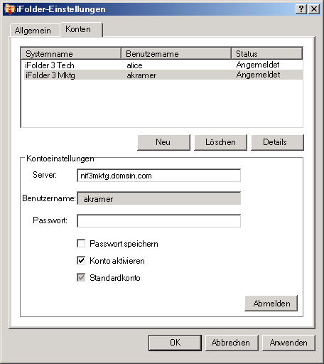

Konfigurieren von iFolder-Konten
Vor der Erstellung von iFolder-Ordnern bzw. der Freigabe von iFolder-Ordnern auf Ihrem System muss mindestens ein iFolder-Konto konfiguriert werden. Für einen Hostcomputer bzw. Server kann nur jeweils ein Konto erstellt werden, Sie können jedoch über mehrere Konten verfügen.
Ein Benutzer mit anderen lokalen Anmelde-Informationen und einem anderen Benutzerkonto kann sich zu einer anderen Zeit beim selben Computer anmelden und mit iFolder unter dieser Identität seinen eigenen Satz an iFolder-Ordnern erstellen. iFolder synchronisiert nur iFolder-Ordner, deren Eigentümer der aktive Benutzer ist.
-
Wählen Sie eine der folgenden Methoden für den Zugriff auf die Konto-Einrichtung:
- Wenn Sie iFolder nach der Installation zum ersten Mal starten, werden Sie aufgefordert, ein iFolder-Konto einzurichten. Mit "Ja" gelangen Sie direkt zur Registerkarte "iFolder-Einstellungen" > "Konten".
- Klicken Sie im Benachrichtigungsbereich mit der rechten Maustaste auf das Symbol für die iFolder-Anwendung (
 ) und wählen Sie dann "Konten" aus, um das Dialogfeld "iFolder-Einstellungen" mit der Registerkarte "Konten" aufzurufen.
) und wählen Sie dann "Konten" aus, um das Dialogfeld "iFolder-Einstellungen" mit der Registerkarte "Konten" aufzurufen.
-
Klicken Sie zum Zugriff auf den Bereich "Konto-Einstellungen" auf "Neu".
-
Geben Sie folgende Werte an:
Parameter Beschreibung Server
Der DNS-Name bzw. die IP-Adresse des iFolder-Enterprise-Servers, auf dem sich Ihr Konto befindet. Beispiel: svr21.beispiel.com oder 192.168.1.1.
Benutzername:
Geben Sie Ihre Benutzeridentität für dieses Konto ein. Der für Sie zuständige iFolder-Administrator entscheidet, ob es sich bei dem von Ihnen verwendeten Format um Ihre Netzwerk-Benutzer-ID (allgemeiner LDAP-Name) oder Ihre Email-Adresse handeln soll.
Wenn Ihr Name beispielsweise Johannes Schmitt, Ihre Benutzer-ID "jschmitt" und Ihre Email-Adresse johannes.schmitt@beispiel.com lautet, konfiguriert Ihr Administrator eine Einstellung für den Server, durch die bestimmt wird, welches der beiden Formate zu Authentifizierungszwecken im Feld "Benutzername" akzeptiert wird.
Passwort
Das Passwort zu Ihrem Benutzernamen.
Passwort speichern
Aktivieren Sie die Option "Passwort speichern", um bei jeder Anmeldung an Ihrem Computer automatisch bei diesem iFolder-Konto angemeldet zu werden. Weitere Informationen hierzu erhalten Sie unter Anmelden bei iFolder-Konten.
Wenn sich Ihr Netzwerkpasswort ändert, tritt ein Fehler auf, wenn iFolder das nächste Mal versucht, sich bei dem iFolder-Konto anzumelden. iFolder fordert Sie zur Anmeldung mit Ihrem neuen Passwort auf und ermöglicht Ihnen die Angabe und Speicherung des neuen Passworts.
Konto aktivieren
Um die im Hintergrund durchgeführte Synchronisierung von iFolder-Einladungen, der Benutzerliste und iFolder-Ordnern für dieses Konto zu ermöglichen, wählen Sie "Konto aktivieren" aus.
Standardkonto
Wenn Sie "Standardkonto" auswählen, wird dieses Konto bei der Erstellung von iFolder-Ordnern in der Dropdown-Liste der Konten standardmäßig ausgewählt.
 -
Klicken Sie auf "OK" oder melden Sie sich an.
Wenn ein Hinweis zu einem Zertifikat eingeblendet wird, überprüfen Sie das Zertifikat und akzeptieren Sie es dann mit "OK". Das Konto wird in der Liste der Konten angezeigt und weist den Status "Angemeldet" auf. iFolder beginnt mit der Synchronisierung vorhandener iFolder-Ordner, iFolder-Benachrichtigungen sowie der Benutzerliste für dieses Konto.
-
Klicken Sie auf "OK", um das Dialogfeld "iFolder-Einstellungen" zu schließen.
-
Gehen Sie zur Einrichtung von iFolder-Konten für das Konto gemäß einer der nachfolgenden Verfahrensweisen vor:
- Wenn iFolder-Ordner für das Konto verfügbar sind, wird eine iFolder-Benachrichtigungsmeldung eingeblendet. Klicken Sie auf die Meldung, um das Dialogfeld für iFolder-Ordner zu öffnen. Fahren Sie fort mit dem Einrichten verfügbarer iFolder-Ordner.
- Wenn keine iFolder-Ordner für das Konto verfügbar sind oder Sie umgehend iFolder-Ordner hinzufügen möchten, klicken Sie mit der rechten Maustaste auf das Symbol für die iFolder-Anwendung und wählen Sie dann "iFolder-Ordner" aus, um das Fenster "iFolder-Ordner" zu öffnen. Fahren Sie fort mit Erstellen von iFolder-Ordnern.